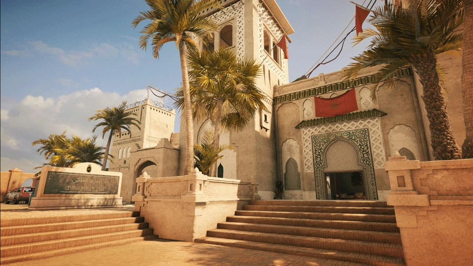

Alle maps

BANK
Bank is een redelijk grote map met 3 verdiepingen.De map is een bank met meerdere kantoorruimtes.
En een grote kluis in de onderste verdieping. Met een garage en de server ruimte is daar ook.
Op de 1st verdieping is een keuken met een kantoorruimte. En een een grote lobby met een ballie.
Op de bovenste verdieping is een kantoor voor meerdere mensen. En een luxe kantoor voor een iemand.

CONSULATE
Consulate is een medium map met 3 verdiepingen.De map is een overheids gebouw met verschillende gebieden.
Op de onderste verdieping is een grote gargage daarnaast is een server ruimte met security ruimtes.
De begande vloer heeft een receptie/toilets/een piano ruimte.Op de bovenste verdieping zijn er meerdere kantoorruimtes.
CLUBHOUSE
Clubhouse is een medium map met 3 verdiepingen.De map is een duitse clubhuis.
Er is een grote bar met een pool tafel ruimte. Ook is er een grote garage met meerdere motoren er in.
Op de bovenste verdieping is er een slaap kamer/was kamer. ook is er een server ruimte met daarnaast een.
een ruimte die in construction is.Op de onderste verdieping is er een kerk ruimte/opslag/meerdere tunnels.
HEREFORT
herefort is een grote map met 4 verdiepingen.De map is een trainings basis met verschillende onderdelen.
op de onderste verdieping is er opslag. op de begande vloer zijn wat verlaten dingen en er is een keuken.
De tweede verdieping is een slaap gebied. en op de bovenste verdieping staan wat random dingen in ruimtes.
OREGON
Oregon is een redelijk grote map met 3 verdiepingen.De map is een huis met verschillende gebieden.
Er een keuken/woonkamer op de begande vloer. Met een optreed ruimte en een grote toren is er ook.
Op de 2e verdieping zijn er meerdere slaap kamers met een opslag. En op de onderste verdieping is er
opslag en meerdere wasmachines/een gebied dat in construction is.

BORDER
Border is een redelijk kleine map met 2 verdiepingen. De map is een Border security.
Op de begande grond zijn er opslag ruimtes/een server ruimte/begage check ruimte en een klein kantoortje.
Op de bovenste verdieping is de security room met video beelden van de camera's er is ook een armory.
Naast de armory is ook een kantoor ruimte.

OUTBACK
Outback is een kleine map met 2 verdiepingen. De map is een outback restaurant.
Op de begande grond is een restaurant/garage en een kleine shop daarnaast.
En op de bovenste verdieping is een slaap ruimte/waskamers/game room en een klein kantoortje
kantoortje.

PLANE
Plane is een medium map met 3 verdiepingen.De map is een gekaapt vliegtuig.
De onderste verdieping is opslag.De begande grond is een stuk voor pasagiers.
het andere stuk is het luxe stuk met een bed ruimte/overleg kamer en een
eens persoon kantoor.
EVENTPLANE
Eventplane is een medium map met 3 verdiepingen.De map is de map plane maar dan
een speeltuig vliegtuig. Die weer staat in een kinder ruimte(de ruimte is van een andere map).
De verschillen zijn dat kleuren van de map zijn anders zijn en er zijn meerdere easter eggs.
Deze map was van het 1 April event.
BARTLETT
Bartlett is een medium map met 2 verdiepingen. het is overheids gebouw.
De map is een oude map die niet meer in de map pool zit.
KANAL
Kanal is een grote map nu. het is een gebouw dat bij een haven staat.
de map is in de laatste update nog gereworked.(er is nog niet veel informatie van)

COASTLINE
Coastline is een medium map en het heeft 2 verdiepingen. De map is een DJ/feest clubhuis.
Op de begande vloer is een grote keuken er zijn ook 2 barren. Ook is er een chill ruimte.
De bovenste verdieping heeft ook een chill room. het heeft ook een vape bar/meerdere bed ruimtes.
SKYSCRAPER
Skyscraper is een medium map met 2 verdiepingen. het is een chinees style gebouw boven op een flat gebouw.
Op de begande vloer is er een etens ruimte/opslag/keuken/bedruimte.
De tweede verdieping heeft een paar random ruimtes/en meerdere thee ruimtes ook heeft het een wijn opslag ruimte.

VILLA
Villa is een grote map met 3 verdiepingen.De map is een italiaanse villa.
De kelder is een oplag van verschillende dingen zo als wijn/kunst.
En op de begande grond is er een grote keuken met daarnaast een kleine opslag ruimte.
ook is er een woonkamer met daarnaast een boeken ruimte.De top vloer heeft een ruimte met kunst
en opgezette beesten. Daarnaast zit een slaap kamer...
THEME PARK
Theme park is een redelijk grote map 2 verdiepingen.De map is een een verlate thema park
dat nu word gebruikt door crimineelen.Op de begande vloer is er nog een gedeelte van een spook
huis. ook is er gedeelte dat een verlate game ruimte is met drugs opgelagen daar.
De tweede verdieping heeft een gedeelte met trein wagonen ook zijn daar nog wat random ruimtes...

FORTRESS
Fortress is een medium map. Met 2 verdiepingen De map is een oud kasteel ergens in Arabië.
Op de eerste verdieping is een keuken,was ruimte,overleg ruimte.
Op de bovenste verdieping is er een museaum gebied,een kantoor,buiten ruimte,opslag ruimte,en nog wat kleine ruimtes.
HOUSE
House is een kleine map met 3 verdiepingen.De map is een woon huis.
Op de onderste verdieping is een garage met een kleine sportschool er in.
De tweede verdieping heeft een woon kamer/een keuken en een kantoortje.
Op de bovenste verdieping is er een slaap kamer. Met daarnaast een was kamer.
Ook is er kinder kamer met daarnaast een stuk dat nog in constructie is.
MAD HOUSE
Mad house is een kleine map met 3 verdiepingen.De map is de map house maar dan in een halloween thema.
Het verschill tussen de twee maps is dat het veel donkerder is en meerdere scary dingen er bij zijn.
Er zijn ook meerdere easter eggs in de map.
FAVELA
Favela is een kleine map met 3 verdiepingen.De map is een huis uit rio janeiro.
Op de onderste verdieping is er een woonkamer met een keuken er in. Ook is daar een grote opslag.
De tweede verdieping heeft meerdere slaap kamers en een kleine opslag ruimte.er is daar ook een kleine plantage.
De bovenste verdieping is een erg kleine kamer met wat storage rekken.